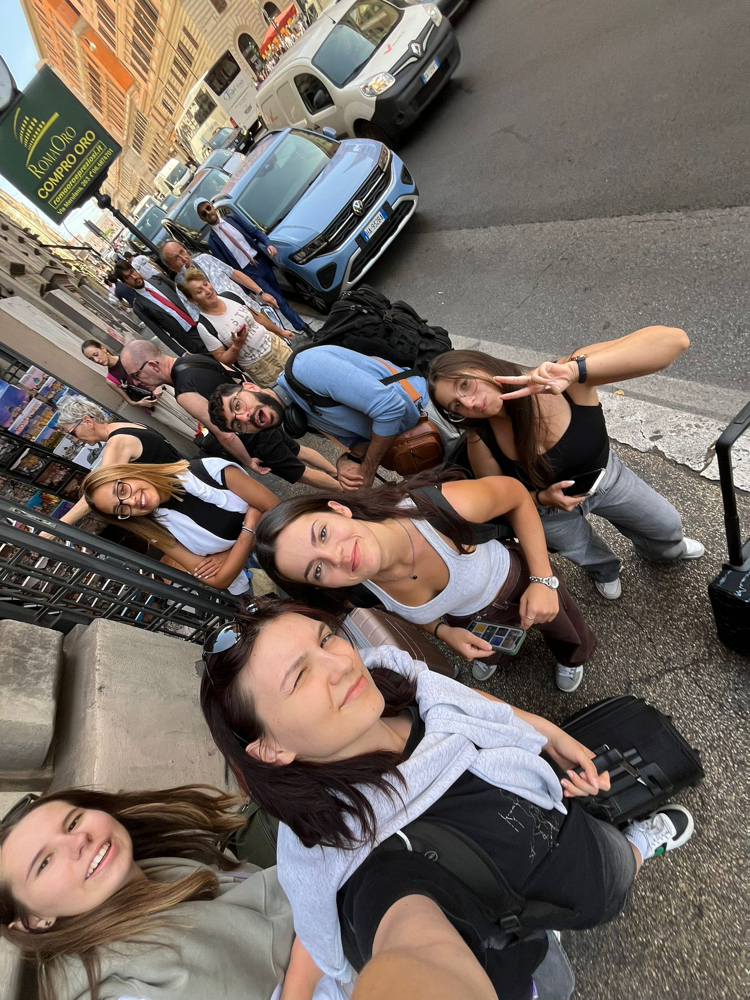
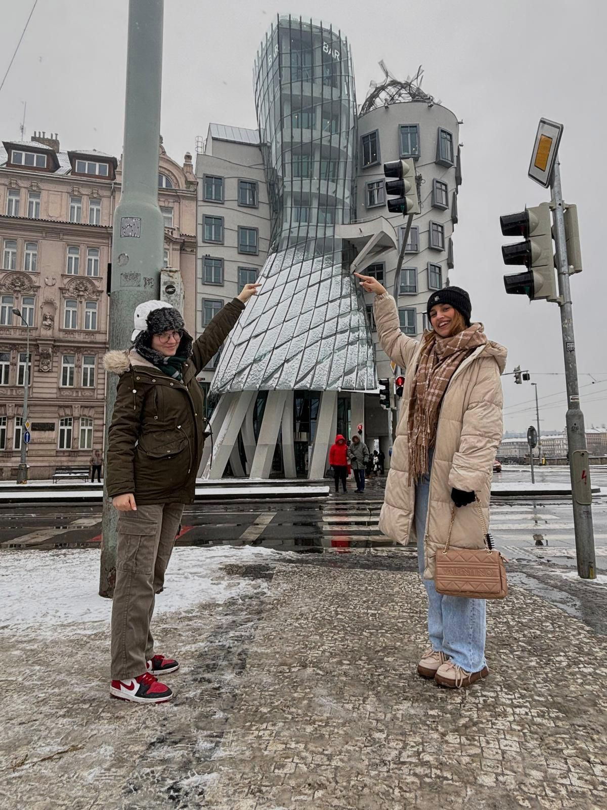
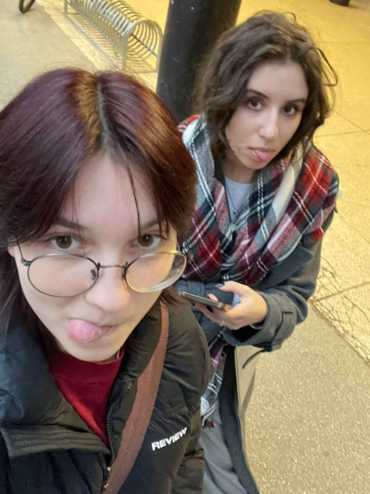

Dobrodošli!
Ovdje ću dijeliti pomalo o tome koliko i što slušam na tjednoj bazi
osim ako se u međuvremenu predomislim o temi...
Formula za vodu je H2O. A formula za dobru ocjenu iz MMK je napraviti sve što se traži
Prosječno vrijeme slušanja: 665 minuta
Prosječan broj poslušanih izvođača: 87
Prosječan broj poslušanih pjesama: 190
| Tjedna glazbena statistika | |||
|---|---|---|---|
| Dan | Najviše slušani izvođači | Najslušanije pjesme | Vrijeme slušanja (min) |
| Ponedjeljak | GROUPLOVE | Tongue Tied - GROUPLOVE | 120 |
| OneRepublic | Ti si mi u krvi - Zdravko Čolić | ||
| Utorak | Lykke Li | Apocalypse - CAS | 115 |
| Mišo Kovač | Svi pjevaju ja ne čujem - Mišo Kovač | ||
| Srijeda | Krankšvester | I lived - OneRepublic | 100 |
| ABBA | Lene - Antonis Remos | ||
Druga sam godina Grafičkog fakulteta i smjer sam Dizajn grafičkih proizvoda. U slobodno vrijeme volim se družiti sa svojim prijateljima, ići u teretanu i putovati. Vrlo sam zainteresirana u ERASMUS i sve projekte koje EU nudi mladima. Evo i slika mojih prijatelja i mene na projektu u Rimu, te s putovanja u Prag.
 Evo i Programme guide za Erasmus mobilnosti
Prošle godine jedan od dražih predmeta bio mi je Digitalni multimedij 1 gdje sam prema uputama stvorila projektni zadatak koji je priložen dolje
Svu glazbu slušam preko spotifyja - evo link
Otvori Spotify 